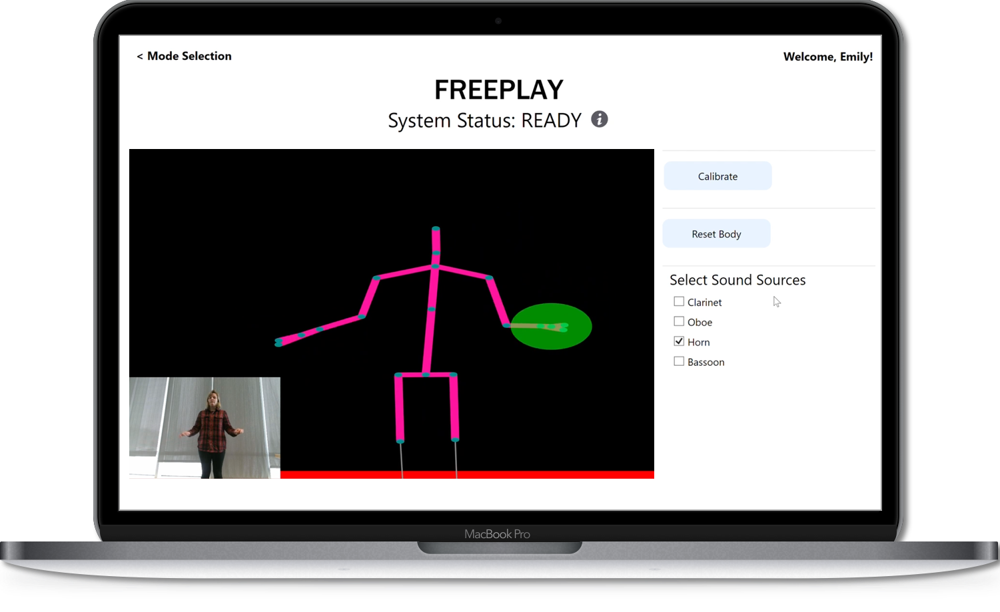
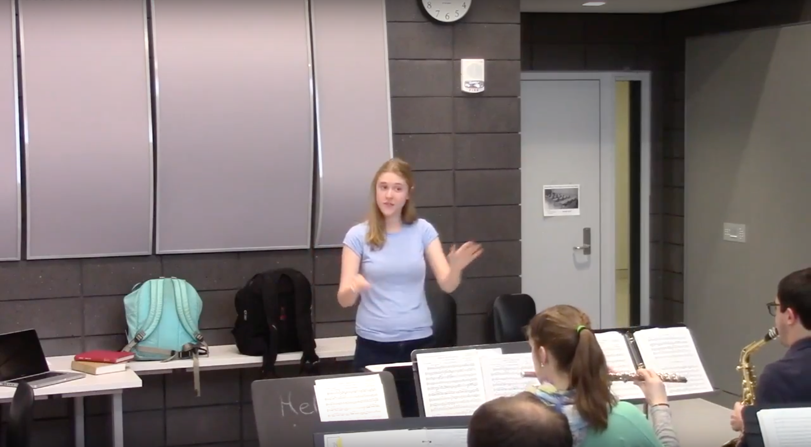
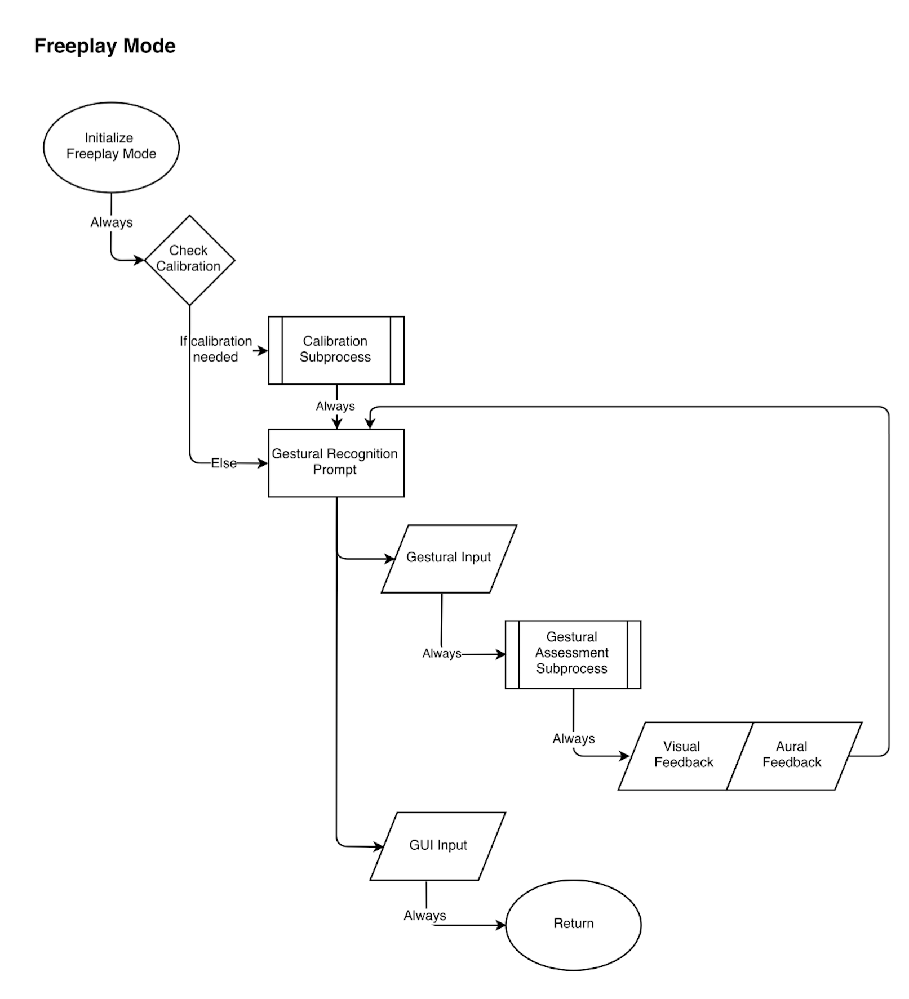
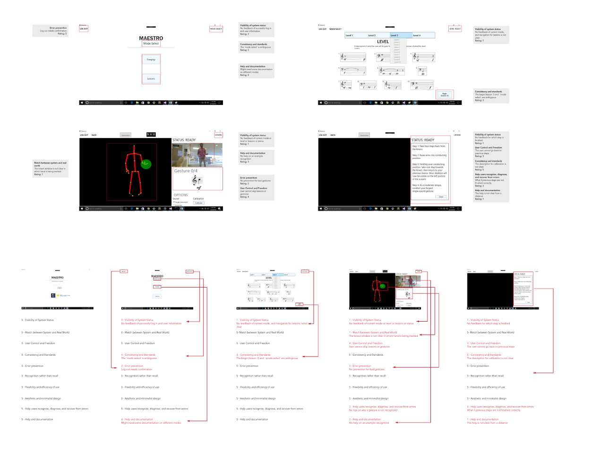
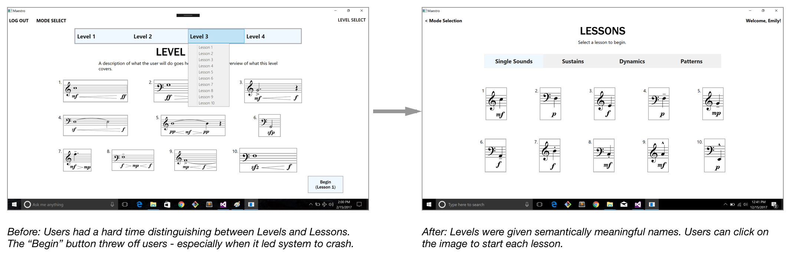

MAESTRO
Developing conducting students’ confidence on the podium, one gesture at a time.
Maestro is a gesture-driven software tool that allows beginning conducting students to practice without a live ensemble.
I was one of two UX researchers/engineers on a 7-person team, working alongside 5 software engineers. Our work on Maestro was facilitated by U-M’s Multidisciplinary Design Program, housed in the College of Engineering. I designed and led the research study, and jointly designed the user interface with my partner.
My Role: UX Researcher and Engineer
Timeline: January – December 2017
Methods: Heuristic Evaluation, Interaction Mapping, Interviews, Personas, Usability Testing, Survey Design & Analysis, Digital Prototyping
Tools: Sketch, InVision, Microsoft Visual Studio (XAML and C#)
Overview
At the beginner level, conducting students face two main challenges: gaining control of gestural technique, and developing confidence on the podium. Due to the difficulty of finding musicians and ensembles to conduct live outside of the classroom, many students currently practice by conducting along to pre-recorded music or reviewing their technique either in the mirror or through video recordings. These methods are passive, in that students follow the music. Conductors, however, influence the shape, style, and direction of sounds in real time. Conducting students are learning how to lead music - not follow it. Maestro provides a more active, engaging tool for conducting students to learn to lead.
Phase I: Discovery
Our team was mentored by Dr. Andrea Brown, Assistant Director of Bands at the University of Michigan, who created the Maestro concept and recruited a team of students to develop the the first version of the system’s algorithm and UI in 2016. In Maestro’s second year, our team started out by evaluating the 2016 system; improving the quality of algorithmic analysis; and creating a better user experience in terms of system navigability and gestural discoverability.
My partner and I first created a research plan to discover insights about the 2016 system’s usability as well as to learn more about our target users. We sought to improve the system's user experience through thorough user research.
System Map
I created a system map to better understand the how the system's front-end interfaced with the back-end algorithm and sound synthesis engine. My partner and I used this map to identify features to evaluate in our first round of usability testing.
Heuristic Evaluation
We then conducted an heuristic evaluation by annotating screenshots of the system with notes of how the interface followed or violated Jakob Nielsen's 10 usability heuristics.
Interviews and Usability Tests
We recruited 5 music students, 2 of whom were enrolled in the university’s beginning conducting course, and 3 of whom had completed the course. Sessions were conducted in practice rooms in the Earl V. Moore music building on campus, to better replicate the context in which Maestro would be used in the future.
We conducted 30-minute semi-structured interviews with participants about their conducting experience, practice habits, and attitudes towards technology in music education, followed by a 30 minute usability evaluation. We asked participants to follow a talk-aloud protocol so that we could understand their attitudes and opinions while using various system features: navigating through the system, completing lessons, and conducting gestures in Freeplay mode. I moderated 3 of the usability tests, and acted as notetaker for 2 tests while my partner moderated. We also created and distributed a post-test questionnaire that asked participants to rate system features and various aspects of the experience on a 5-point Likert scale.
Here I am, moderating a usability test in the Earl V. Moore music building.
Key Insights
My partner and I analyzed our findings from our video recordings and surveys by making a virtual affinity wall. We identified several key clusters that shaped our prototyping and implementation phases:
- Users responded positively to the Kinect skeleton. Users valued the visual feedback in the form on the Kinect skeleton because they could focus on their posture and technique without the additional distraction present in the video screen; they mentioned they weren’t looking at the video feedback unless they wanted to monitor a very subtle gesture.
- Users struggled with the information architecture of Lesson mode. Lessons were organized under "Levels 1-4", with a sub-structure of "Lessons 1-10."" There is very little semantic information encoded in these names, and users weren’t sure how these Levels or Lessons were related. Users had a difficult time remembering whether they had completed Lesson 1 in Level 1 or in Level 2, since the lesson itself had the same name.
- First-time users didn’t know how to begin interacting with the system in Freeplay mode. They weren't sure whether they could start conducting right away, and after realizing that they could not, were not sure which button they needed to press to start the process.
Personas
Before we began prototyping, we created personas of three target users based on our interview and usability test findings. We used these personas to represent our users and help us justify our design decisions to our team and to the faculty panels we presented to each quarter.


Phase II: Prototyping
My partner and I split up the design process by features: I designed the onboarding process, the system navigation, the architecture of the lesson modes, and the post-lesson feedback visualizations, while my partner designed the Freeplay and Lesson modes. Dr. Brown was invaluable in providing us with guidance on organizing lessons by concepts as well as on how we could translate our findings from our interviews towards creating a useful feedback and reflection process after users complete each lesson.
We used Sketch and InVision to rapidly iterate on our high fidelity design after discussing design decisions with our team and mentors each week.
Phase III: Implementation
Starting Fall 2017, our team transitioned from design to development. We used XAML to code the new system, and modified the associated C# code when necessary.
While my partner and I had been evaluating the 2016 system and prototyping a new front-end interface, the developers on our team had been making updates to the algorithm that improved the overall accuracy and consistency of recognizing gestures. The sound synthesis subteam implemented their sound synth engine, which featured 4 synthesized instruments: clarinet, oboe, horn, and bassoon. While the improvements to the backend improved the responsivity of the system, we realized that some of our goals for updating the system would be out of reach for development this year; it would be better to focus on improving the user experience for a limited range of functions than to try to implement new feedback modes or lesson structures.
We focused on strengthening several key features during development to improve the baseline user experience:
- Calibrate and Reset Body buttons moved to reflect order in which users should click them. Users must calibrate the system before using it, so we moved it from the bottom corner of the interface to the top. Additionally, users had been confused about why the Reset Body button was placed next to the Calibrate button - they weren’t sure what the difference was. We moved it below Calibrate to visually separate their functions and the order in which users will use them.
- Tooltips added to guide users through Calibration, Reset Body, and system status features. We used toolips to provide users with additional information on the Calibrate and Reset Body buttons, as well as on the color encodings on the Kinect skeleton as they pertain to System Status.
- Video feedback minimized. We moved the video feedback screen to the corner of the interface, as users expressed that they were using it only to make minor adjustments or observe nuances in their form. This gave us room to implement the audio feedback selection on the sidebar.
Additionally, the information architecture of lesson mode was restructured and renamed. Lesson levels are grouped in a sequence similar to that used in conducting courses: single sounds, sustains, dynamics, and patterns.
The screen capture below shows a user selecting instrument(s) for audio feedback. Users can select one instrument, or create an ensemble by selecting multiple instruments.
The screen capture below shows a user navigating through the system's onboarding process and Lesson mode.
Our team presented this iteration of the Maestro system on display at the U-M Campus of the Future Symposium on October 27th, 2017. Here, our mentor, Dr. Brown, tries out our latest iteration.
Phase IV: Validation
To validate the user experience of our final design, we conducted another round of usability tests with 8 conducting students from the School of Music, Theatre, and Dance. Two usability tasks were conducted. The first task evaluated the discoverability of gestural interactions within the “Freeplay” mode by instructing participants to discover and express gestures of different dynamic levels, dynamic changes, and release types. The second task evaluated the ease of navigability through the Lesson mode interface by asking participants to navigate to, select, and describe their understanding of the Lesson screen. The evaluation resulted in a task completion rate of 100% for all 4 tasks across all eight participants. After completion of both tasks, we distributed surveys to collect feedback on participants’ perception of their experience with the system using a 5-pt. Likert scale (1 - strongly disagree, 3 - neutral, and 5 - strongly agree) with the bottom 20% of scores dropped. Tasks with mean scores of 4+ passed validation, and are highlighted in bold below:
Discoverability/Responsiveness
- Overall, the system responded appropriately to my gestures: 3.75
- Overall, I understood when I performed a gesture accurately: 4
- Overall, I understood when I did NOT perform a gesture accurately: 3.75
- The system responded to my action points accurately: 4
- The system responded with the appropriate dynamics related to my gesture: 3.25
- The system responded to my releases accurately: 3
Lesson Navigability
- I was able to determine which lesson was appropriate to start with: 5
- I understood the purpose of each lesson: 4.75
- I was able to navigate through lessons without confusion: 4.5
- I was able to clearly see the lesson instructions from the conducting position: 4
Phase V: Recommendations
During the Fall 2017 round of validation testing, we identified both successful improvements to the system as well as areas for continued work and future growth. Key findings are outlined below, and are followed by recommendations for the 2018 Maestro team.
- Need for improved help & documentation for first time users. Create a Tutorial Mode that has the same functions as Freeplay mode, but steps the user through each feature step by step. For example, a popup would tell the user to first calibrate; then, there might be a popup pointing their attention to the system status feedback methods (described below) with an encouragement to conduct a gesture; there could be a popup telling users that they can press Reset Body any time, but particularly when their skeleton disappears; and finally, there could be a popup encouraging users to change the instrument selected for feedback, and that they can create “ensembles” by selecting multiple instruments.
- Streamline the calibration and setup process.Moving forward, the ideal solution would be to seamlessly build calibration into the user’s first gesture. However, several intermediary improvements could be made. The team should create a more proactive instruction for users to calibrate. One possible solution would be to create a popup that appears when users enter Freeplay mode and doesn’t go away until user has calibrated. The Calibration instruction screen could automatically disappear once calibration has been successfully completed, so users don’t have to walk back to the laptop to hit the “Done” button. Additionally, there should be a visual or audio indication that calibration has been completed successfully.
- Clarify color encodings used to represent system status.Users do seem to understand the color encoding that green means “ready”, but didn’t as clearly understand the encoding of the blue circle. One participant said that it might be helpful to distinguish between the “playing music” status and the “not ready” status by using different colors. Additionally, the onboarding/tutorial process could help ensure that users are aware of this color encoding on the Kinect skeleton.